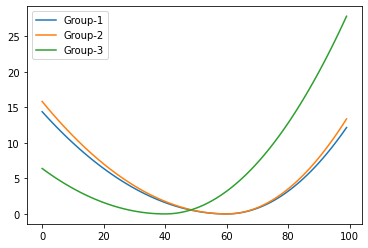
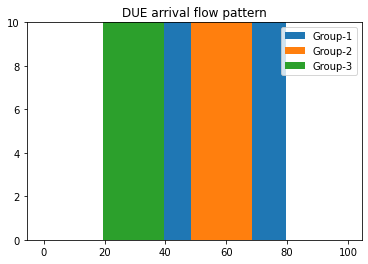
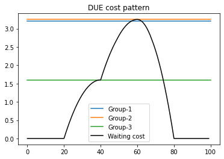
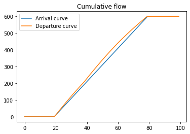

Sample of DUE problem¶
Import modules¶
[1]:
import numpy as np
import pandas as pd
import BottleneckModel as bnm
import importlib
importlib.reload(bnm)
import cvxpy as cp
import matplotlib.pyplot as plt
%matplotlib inline
Set paramerters¶
[2]:
# Set paramerters
# Number of groups
K = 3
# Total OD demand
Q = np.array([200, 200, 200])
# Bottleneck Capacity
mu = 10
# Time window
T = 100
# Delta t which is step width
dt = 1
# Create schedule delay function
# Desired departure time
d1 = 60
f1 = np.array([abs(d1-i*dt)**2*0.02 for i in range(T)], dtype=float)
f1[:int(d1*(1/dt)):] = f1[:int(d1*(1/dt)):]*0.2 # early arrival
f1[int(d1*(1/dt))::] = f1[int(d1*(1/dt))::]*0.4 # late arrival
# Desired departure time
d2 =40
f2 = np.array([abs(d2-i*dt)**2*0.02 for i in range(T)], dtype=float)
f2[:int(d2*(1/dt)):] = f2[:int(d2*(1/dt)):]*0.2 # early arrival
f2[int(d2*(1/dt))::] = f2[int(d2*(1/dt))::]*0.4 # late arrival
# Create schedule delay matrix
s = np.block([[f1],[f1*1.1],[f2]]).T
Check shape of schedule delay function¶
[3]:
plt.plot(s[:,0], label='Group-1')
plt.plot(s[:,1], label='Group-2')
plt.plot(s[:,2], label='Group-3')
plt.legend()
[3]:
<matplotlib.legend.Legend at 0x17528fdf820>

Available solver for cvxpy¶
It is recommended to use GUROBI. If the below does not have GUROBI, please install the Gurobi Python interface as described here first.
[4]:
cp.installed_solvers()
[4]:
['CVXOPT', 'ECOS', 'GLPK', 'GLPK_MI', 'GUROBI', 'OSQP', 'SCS']
Create model and solve problem¶
[5]:
prm = bnm.parameter(K, Q, T, s, mu)
DUE_m = bnm.DUE_model(prm)
[6]:
DUE_m.solve()
sol = DUE_m.solution
Academic license - for non-commercial use only - expires 2021-03-01
Using license file C:\Users\TAKALA\gurobi.lic
[7]:
sol
[7]:
{'q': array([ 0., 0., 0., 0., 0., 0., 0., 0., 0., 0., 0., 0., 0.,
0., 0., 0., 0., 0., 0., 0., 0., 0., 0., 0., 0., 0.,
0., 0., 0., 0., 0., 0., 0., 0., 0., 0., 0., 0., 0.,
0., 0., 0., 0., 0., 0., 0., 0., 0., 0., 0., 0., 0.,
0., 0., 0., 0., 0., 0., 0., 0., 0., 0., 10., 0., 0.,
10., 0., 0., 10., 0., 0., 10., 0., 0., 10., 0., 0., 10.,
0., 0., 10., 0., 0., 10., 0., 0., 10., 0., 0., 10., 0.,
0., 10., 0., 0., 10., 0., 0., 10., 0., 0., 10., 0., 0.,
10., 0., 0., 10., 0., 0., 10., 0., 0., 10., 0., 0., 10.,
0., 0., 10., 10., 0., 0., 10., 0., 0., 10., 0., 0., 10.,
0., 0., 10., 0., 0., 10., 0., 0., 10., 0., 0., 10., 0.,
0., 10., 0., 0., 0., 10., 0., 0., 10., 0., 0., 10., 0.,
0., 10., 0., 0., 10., 0., 0., 10., 0., 0., 10., 0., 0.,
10., 0., 0., 10., 0., 0., 10., 0., 0., 10., 0., 0., 10.,
0., 0., 10., 0., 0., 10., 0., 0., 10., 0., 0., 10., 0.,
0., 10., 0., 0., 10., 0., 0., 10., 0., 0., 10., 0., 10.,
0., 0., 10., 0., 0., 10., 0., 0., 10., 0., 0., 10., 0.,
0., 10., 0., 0., 10., 0., 0., 10., 0., 0., 10., 0., 0.,
10., 0., 0., 10., 0., 0., 0., 0., 0., 0., 0., 0., 0.,
0., 0., 0., 0., 0., 0., 0., 0., 0., 0., 0., 0., 0.,
0., 0., 0., 0., 0., 0., 0., 0., 0., 0., 0., 0., 0.,
0., 0., 0., 0., 0., 0., 0., 0., 0., 0., 0., 0., 0.,
0., 0., 0., 0., 0., 0., 0., 0., 0., 0., 0., 0., 0.,
0.]),
'w': array([0. , 0. , 0. , 0. , 0. , 0. , 0. , 0. ,
0. , 0. , 0. , 0. , 0. , 0. , 0. , 0. ,
0. , 0. , 0. , 0. , 0. , 0.156 , 0.304 , 0.444 ,
0.576 , 0.7 , 0.816 , 0.924 , 1.024 , 1.116 , 1.2 , 1.276 ,
1.344 , 1.404 , 1.456 , 1.5 , 1.536 , 1.564 , 1.584 , 1.596 ,
1.6 , 1.756 , 1.904 , 2.044 , 2.176 , 2.3 , 2.416 , 2.524 ,
2.624 , 2.7188, 2.8112, 2.8948, 2.9696, 3.0356, 3.0928, 3.1412,
3.1808, 3.2116, 3.2336, 3.2468, 3.2512, 3.2424, 3.216 , 3.172 ,
3.1104, 3.0312, 2.9344, 2.82 , 2.688 , 2.552 , 2.4 , 2.232 ,
2.048 , 1.848 , 1.632 , 1.4 , 1.152 , 0.888 , 0.608 , 0.312 ,
0. , 0. , 0. , 0. , 0. , 0. , 0. , 0. ,
0. , 0. , 0. , 0. , 0. , 0. , 0. , 0. ,
0. , 0. , 0. , 0. ]),
'rho': array([3.2 , 3.2512, 1.6 ])}
Plot figure¶
Flow pattern¶
[8]:
btm = np.zeros(prm.T)
for OD in range(prm.K):
plt.bar(range(prm.T), sol['q'][OD::prm.K], bottom=btm, width=1, label='Group-%i'%(OD+1))
btm = btm + sol['q'][OD::prm.K]
plt.legend()
plt.title('DUE arrival flow pattern')
[8]:
Text(0.5, 1.0, 'DUE arrival flow pattern')

Cost pattern¶
[9]:
for OD in range(prm.K):
tmp_rho = sol['rho'][OD]
plt.plot([0,prm.T], [tmp_rho, tmp_rho], label='Group-%i'%(OD+1))
plt.plot(sol['w'], color='black', label='Waiting cost ')
plt.legend()
plt.title('DUE cost pattern')
[9]:
Text(0.5, 1.0, 'DUE cost pattern')

Cumulative flow¶
[10]:
cumsum = np.zeros(prm.T)
for OD in range(prm.K):
cumsum = cumsum + sol['q'][OD::prm.K]
curve = cumsum.cumsum()
[11]:
Time_List = np.linspace(0,prm.T-1,prm.T)
plt.plot(Time_List, curve, label='Arrival curve')
plt.plot(Time_List-sol['w'], curve, label='Departure curve')
plt.legend()
plt.title('Cumulative flow')
[11]:
Text(0.5, 1.0, 'Cumulative flow')
